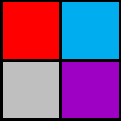
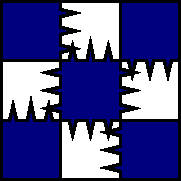
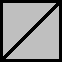
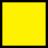
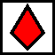
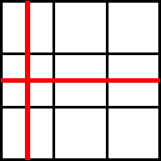
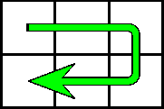
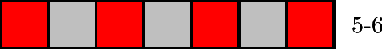
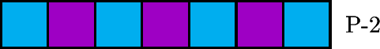
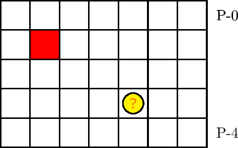

基礎知識
凡例
マニュアルの構成
本マニュアルの構成は次のとおりです:
- 基礎知識: 本マニュアルにおいて前提となる情報や知識を述べる．
- 階層別指針: 各階層ごとの前期指針と後期指針，およびそれらの解説を述べる．
- 一般指針: 各テーマ・項目ごとに，指針とその解説を述べる．
- TIPS: その他のことについて解説する．
ここに，ステージのうち，深度 1300 m以前にあたる部分を前期，深度 1300 m以降にあたる部分を後期とよびます．各指針は，同じ型の階層やパターンに対しても，前期と後期とで異なることがあります．
本マニュアルを通して，新出用語は太字，短い強調は下線で表記されます．解説において，一部の注釈は次の形式で強調されています:
- 注意: 取るべき行動が存在する，気を付けるべきこと．
- 注記: その他の気を付けるべきこと．
- 代替: 無条件で指針以外に取ることのできる有効な行動．条件付きで取れる行動は「代替」としては指摘しない．
各階層は，針やレーザーの出現に応じて次の 4 種類に分類されます:
- 通常ステージ: 確実には針が出現せず，レーザーも出現しない．
- 針ステージ: 確実に針が出現する．
- 縦ステージ: 縦レーザーが出現する．
- 横ステージ: 横レーザーが出現する．
また， \((k \times 100)\) m型の階層は単に \(k\)-型であるともいいます．
図の約束
ステージの図には，以下の表の記号を用います:
| 記号 | 意味 |
|---|---|
 |
石（赤・白・青・紫） |
| 塊 | |
| 壁 | |
| スペース | |
 |
針（上針・下針・左針・右針・四針） |
 |
任意のブロック |
 |
変数マス |
| 記号 | 意味 |
|---|---|
| 犬 | |
 |
ザクロ |
| 銀貨 | |
| 金貨 | |
 |
レーザーの予告線（縦・横） |
 |
移動経路 |
| 記号 | 意味 |
|---|---|
 |
階層とその深度（図は 500 m型の 6 行目を指す） |
 |
パターン内の深度（図はパターンの 2 行目を指す） |

ステージの端を表す記号は用意していません． ±4 列にあたる部分はすべて壁が配置されているものと見なします．
ステージの座標は， 2 つの（有効な）実数の組で表します．第 1 成分が行（垂直方向の座標），第 2 成分が列（水平方向の座標）を表します．列の座標は，ステージ中央の列のマスの中心を 0 とし， −3 から +3 の値を取ります．列の座標の符号は 0 のときを除いて省略しません．オブジェクトおよび犬の座標は，その描画の中心点のものを採ります．座標の表記は，状況に応じて次の 3 つを使い分けます:
- \((x, y)\): 深度 \(x\) mの \(y\) 列目．
- \(k\)-\((x, y)\): \(k\)-型における，深度 \(x\) mの \(y\) 列目．
- P-\((x, y)\): そのパターン等における，深度 \(x\) mの \(y\) 列目．
例えば，図 1.1.1 において，赤石の座標は P-(1, −2) ，金貨の座標は P-(3, +1) と書かれます．また，パターン内での行数は "P-" を用いて表します．例えば，再び図 1.1.1 において，赤石が位置する行は P-1 行目，金貨が位置する行は P-3 行目です．
エリアやパターンの出現深度は，図で P-(1, \(y\)) にあたる行が現れる深度のことを指します．ただし，エリアやパターン全体を表す図は， P-0 行目を含めて描かれます．
基礎用語（五十音順）
以下の表は，本マニュアルにおける基礎的な用語を五十音順で挙げたものです（すべての用語を網羅したものではありません）．用語は必ずしも公式のものとは一致しません．用語の検索にはブラウザの機能 (Ctrl+F) も利用してください．
| 用語 | 意味 |
|---|---|
| 安定 | 範囲内のすべてのオブジェクトが，落下しておらず，かつ自然には消滅しないこと． |
| 石 | 1 回の吸引で破壊できるブロック．赤・白・青・紫の 4 色．公称は「ソウルブロック」． |
| 犬 | プレイヤーのワンちゃん． |
| 色 | 石および塊の分類．赤・白・青・紫・透明・塊の 6 種類． |
| 迂遠 | 時間のかかる行動．一般的には有効でも，その状況ではかえって時間がかかる場合も含む． |
| 右方 | 対象マスより右の列かつ等しい行のマス全体，および対象マス自身． |
| 階層 | 100 mごとに設定された各ステージ． |
| 壁 | 死亡判定のない破壊できないブロック． |
| 下方 | 対象マスより下の行かつ等しい列のマス全体，および対象マス自身． |
| 吸引 | 犬が掃除機を使うこと．石や塊を破壊できる． |
| 急降下 | 犬が自由落下より速く降りること．降下中の下吸引で実行する． |
| 行 | ステージの垂直方向の座標．深さ． |
| 狭窄 | 範囲内で，通過可能なマスが 1 マスだけの行，またはそのマス． |
| 金貨 | 金色のアイテム．犬に無敵状態またはバリアを付与する． |
| 銀貨 | 銀色のアイテム．画面上の石の色を変える． |
| 塊（クレイ） | 5 回の吸引で破壊できるブロック．（これも公称は「ソウルブロック」？） |
| 経路 | 犬の通り道． |
| 降下 | 犬が自由落下すること． |
| 後期 | ステージのうち，深度 1300 m以降の部分． |
| 硬直 | 犬が操作を受け付けないこと． |
| ザクロ | 赤色のアイテム．犬の寿命を 23 カウント回復する．公称は「あざやかザクロ」． |
| 左方 | 対象マスより左の列かつ等しい行のマス全体，および対象マス自身． |
| 残機 | 犬の残機．最大 10 個所持できる．公称は「セカンドチャンス」． |
| 寿命 | 犬が生存できる時間．ザクロで回復できる．最大 100 カウント． |
| 上方 | 対象マスより上の行かつ等しい列のマス全体，および対象マス自身． |
| 深度 | ステージにおける，絶対的または相対的な深さ． |
| 進入 | エリアやパターンなどに入ること． |
| スコア | 犬の（最大）到達深度． |
| スペース | 空白．ブロック（またはオブジェクト）のない領域． |
| 前期 | ステージのうち，深度 1300 m以前の部分． |
| 潜行 | 犬がより深い地点へ降りること．途中で上昇を伴ってもよい． |
| 側面 | 直左または直右． |
| 代替的 | 指針以外に有効だと思われる行動で，無条件に実行してよいもの． |
| 直右 | すぐ右のマス． |
| 直左 | すぐ左のマス． |
| 直上 | すぐ上のマス． |
| 直下 | すぐ下のマス． |
| 定型 | 標準的な経路や立ち回り． |
| 針 | 特定の方向から近づくと針を出すブロック．公称は「スパルタンソウルブロック」． |
| ポイント | 取得点数．公称は「スコア」． |
| 落下 | オブジェクトが自由落下すること． |
| 落下停止 | オブジェクトが落下をやめること． |
| 離脱 | エリアやパターンなどから出ること． |
| レーザー | 死亡判定をもつ青白い光線．縦と横の 2 種類．照射の直前に赤い線と音で予告される． |
| 列 | ステージの水平方向の座標*1． |
| 連結 | 1. 2 つの同色のブロックが隣接によって繋がり，離れなくなること． 2. 同色のブロックの集合であって，どの 2 つのブロックも隣接されたブロックだけを伝って繋がっていること． |
| 連結成分 | 同色ブロックの連結な集合であって，（包含関係について）極大なもの． |
脚注
- *1 ここでの行と列の定義は，数学などにおける用法に倣っています．公式の「列」概念とは異なるので注意します: アチーブメント「フリーフォール」には「1 回に 10 列以上落下させる」（強調筆者）とありますが，この「列」は本マニュアルにおける「行」のことです．